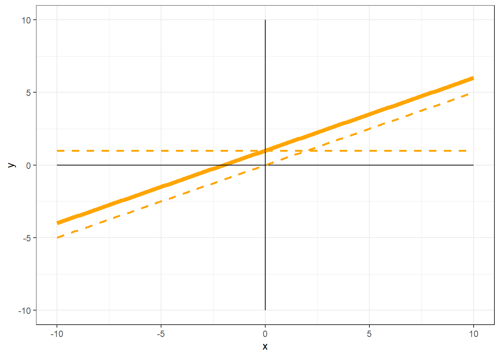

Linear
The equation \(y = 0.5(x)\) would be represented as follows:

Each value of y on the line is half that of x.
- When x is 2, y is 1
- When x is 5, y is 2.5
We say that the relationship between y and x is linear, because it is a described by a straight line, and y is simply equal to a value of x multiplied by a constant (0.5).
Multiplying x by larger numbers would make this line steeper; smaller numbers make this line less steep. If the number were negative, the line would slope from the upper left of the plot to the lower right.